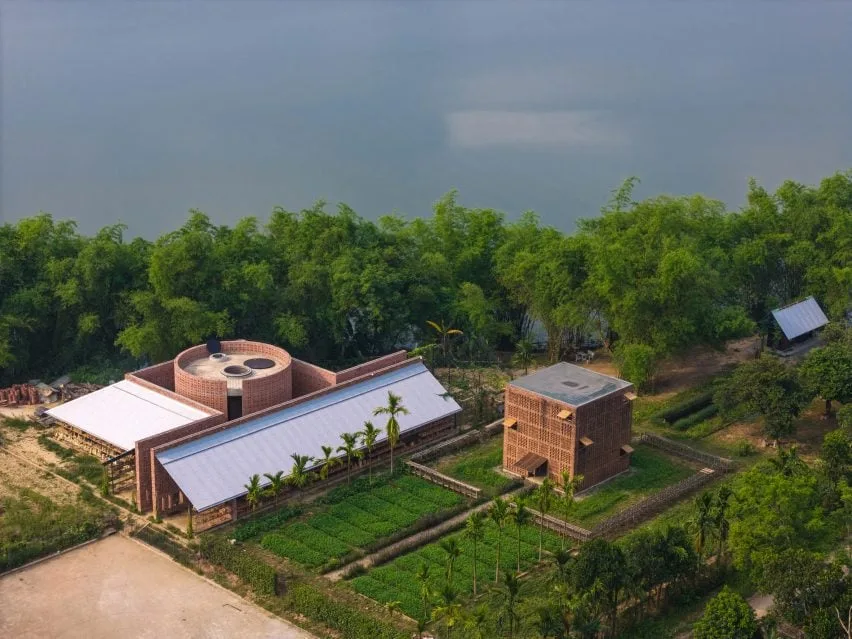
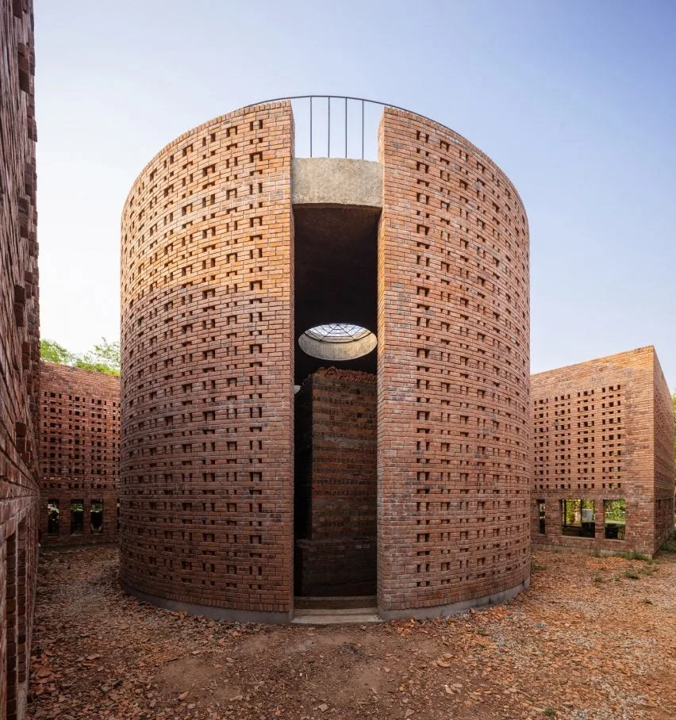
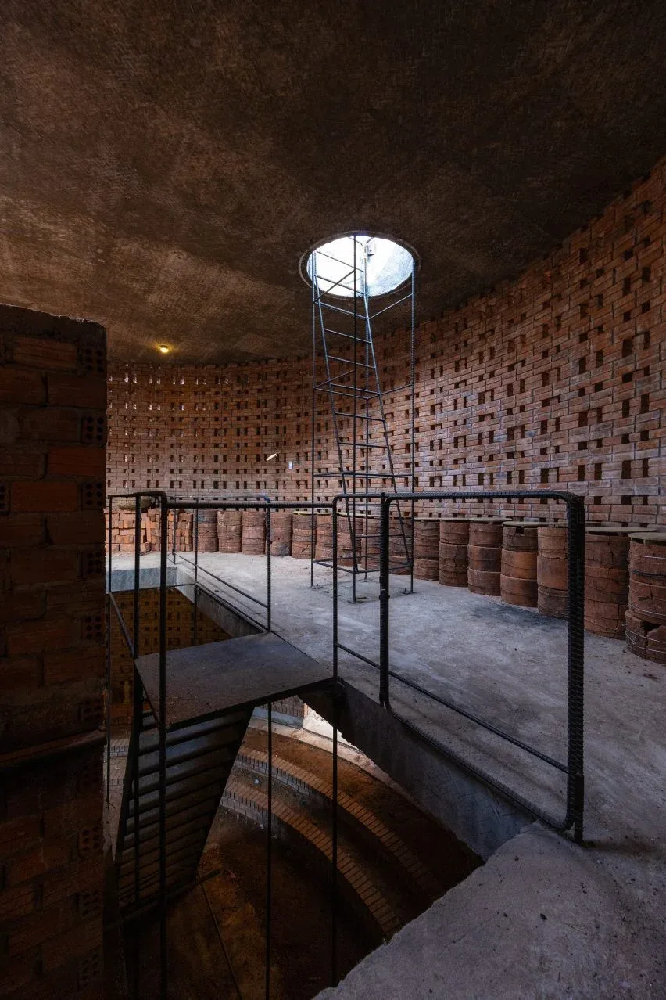
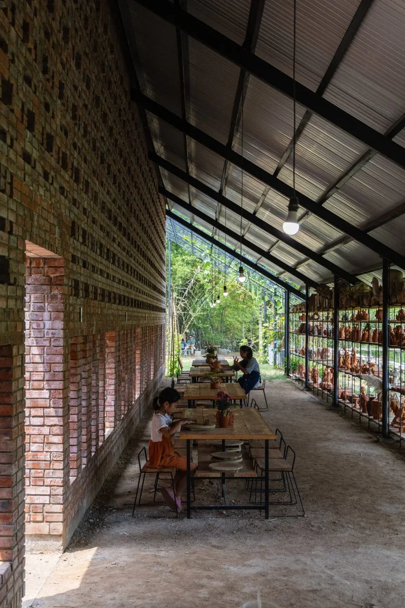
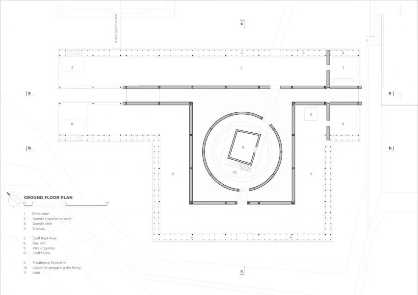
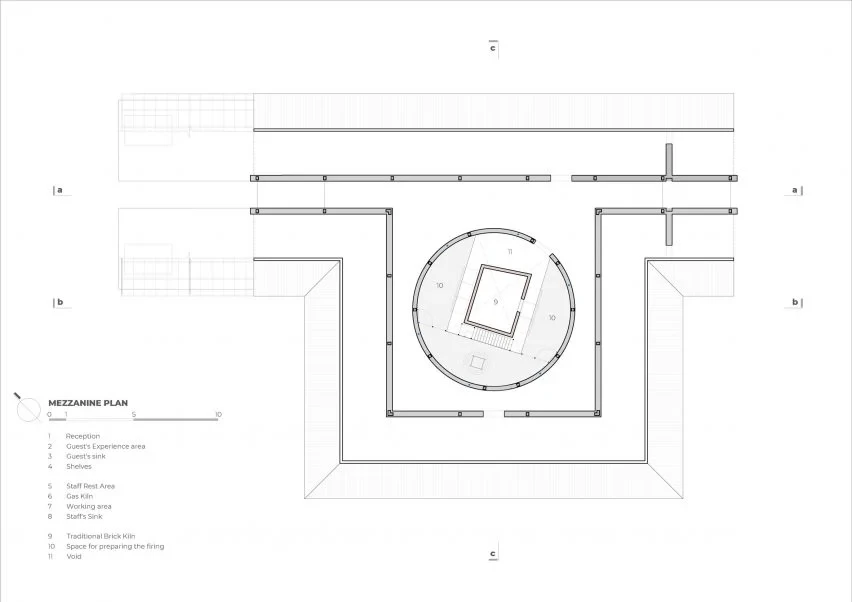
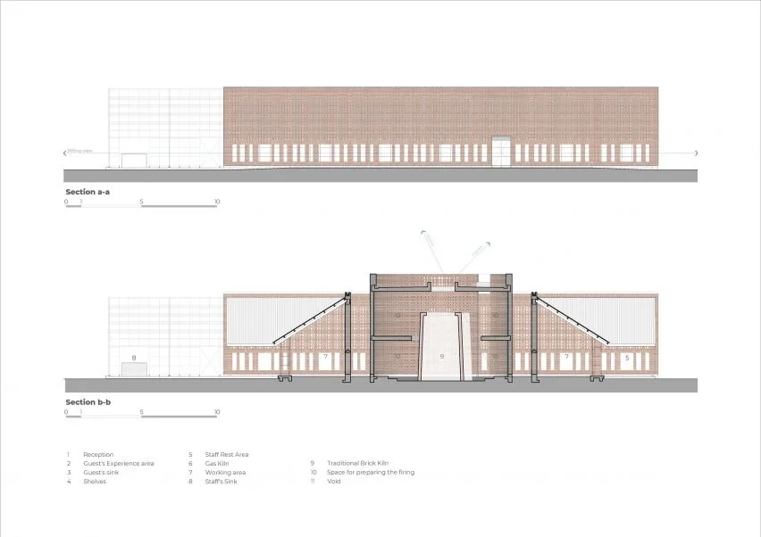
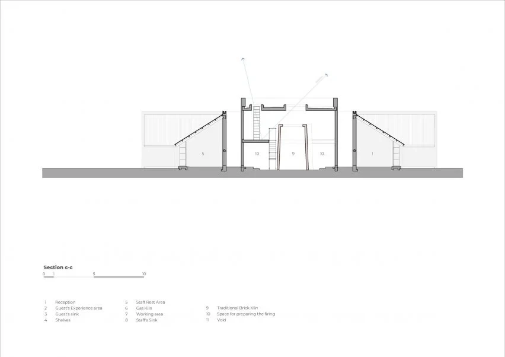

Ceramics workshop and visitor space · 2023
Terra Cotta Workshop
Tropical Space
Điện Phương, Quảng Nam, Vietnam
Artisans make terracotta beside the river, while visitors can handle clay, see finished pieces and learn about firing. Distinct routes and working areas bring craft production and public encounter into the same complex.
The design grew from observing artisans' movements, working positions, light and wind. Two long brick walls organise the site around the retained kiln; perforations provide shade and airflow, while broken fired pieces become courtyard surfacing, extending the material cycle underfoot.


Relevant connections
MAKE
Craftspeople shape and fire clay, and visitors have a separate area to try working with it.
SHOW
The route exposes stages of production and displays work while artisans share their knowledge.
Images and drawings / 08













